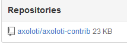

um mm named wrong 2-1 = 1-2 and vice versa .....didnt find a way to change that.
is there a way to delete the files on github?
Library : Um mm named wrong
philoop
#1
Philoop Contributions
currently you will need to use git tools to do anything other than add and update.
(I will probably add some library maintenance features later)
OR.. for the time being, people can let me know what changes are needed and I can do it.
its very quick to do, but can be a bit confusing if you don't know source control systems / git, as there is a bit of 'terminology' involved.
IF your unsure, let me know ... its quicker for me to do that changes, than sort out the mess of someone doing something wrong and push this into our repository!
it you want to sort it out yourself, there are lots of tools to choose from, in order of 'complexity/features'
- Github's own tool - https://desktop.github.com
- SourceTree -https://www.sourcetreeapp.com
- Git command line tools
in all cases you simply need to point it to the axoloti-contrib directory, as this contains the local repository ie. you don't need to clone it.
as for your particular situation.
you say you are removing files and they keep coming back
... yes this is normal behaviour for repos, you have to tell the repo to delete, rather than just delete your local copy
BUT
Ive notice your changes are not on the central github repo.
you can see this yourself:
https://github.com/axoloti/axoloti-contrib
what this probably means is that you have not authenticated your setup correctly, or that errors occurred when you set this up.(I can't tell, as Ive no details of what you did etc)
what you should do is..
1) move your changes somewhere else (temporarily)
2) change your settings for the contrib library and then do init (which will delete everything , hence step (1)
3) check there are no errors in the console!
4) assume no errors , move your changes back *
5) use File / Sync Libraries
then go to :
https://github.com/axoloti/axoloti-contrib
and check you can see the changes committed.
- obviously, it means you can make your corrections with named files, before you do this

philoop
#3
I followed every step, but i am still not able to upload.
Also, i get this message:
Sync (pull) FAILED : factory
org.eclipse.jgit.api.errors.NoHeadException: Pull on repository without HEAD currently not supported
org.eclipse.jgit.api.errors.NoHeadException: Pull on repository without HEAD currently not supported
and
Sync Successful : community
on githb
so i think i am authenticated ...
No , I meant your username/pastor may have been incorrect when you did init.
If you do init, and then sync without any of your changes does it work
can also check for community library revision is BLANK.
ok, 1.0.8 is out...
please use preference-> libraries 'reset all'
theres a few things changed in this area, and Ive also added lots more info, to trace if we have issues like this in the future.
BTW: I assume you are using the released built version, and not directly compiling from github?
if you are compiling yourself, then you need to let us know , as things are a little different!